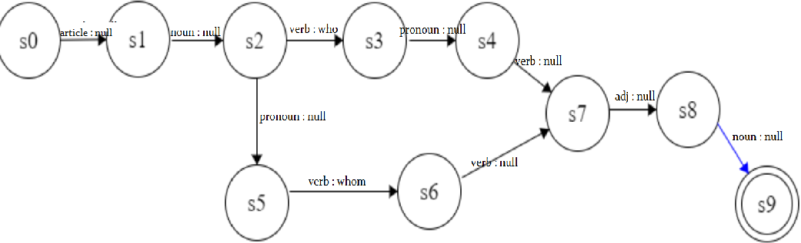

第一題
問題 : 假設你在處理發音。漢語中,miàn ‘面’及 kàn ‘看’等詞的 an 唸法不同。請蒐集相關漢字,寫出完整音變的規則
整理 :
1. 韻母發"ian" : 麵(mian)、建(jian)、縣(xian)、變(bian)、欠(qian)
2. 韻母發"an" : 看(kan)、站(zhan)、善(shan)、漫(man)、半(ban)
說明 :
1. 韻母發"an"的字，如 : 看、站...等等，其讀音近似[an]；而"ian"的字，如 : 麵、建...等等，其讀音近似[iɛn]
2. 參考維基百科的"Chinese (Mandarin)/Pronunciation of Finals"
條目中有提到，韻母"an"，其IPA音標為[an]，"starts with plain continental [a]"，
與英文中的"stun"以及"fun"韻母相類似；而韻母"ian"，其IPA音標為[i̯ɛn]，類似英文中的"yen"
3. [an]以及[i̯ɛn]是不同的韻母，所以可以發現在中文字中在"ㄢ"韻之前有"ㄧ"的話，就會發生如這種變音情形
第三題
問題1 : 英文中的關係代名詞(包含關係代名詞為主詞及受詞兩種情形)
問題2 : 受詞子句重覆包孕,如:I know that he is smart. He thinks that I know that he is smart. She believes that he thinks that I know that he is smart....
問題3 : Recursive nominal modification, e.g. a student in blue jeans, a student in blue jeans with long hair, a student in blue jeans with long hair on campus...
1. 以下範例的FST可以判斷該範例句子的關係代名詞who為主格"who"，或為受格"whom"
2. 判斷問題2之句型"
3. 判斷問題3之句型"
4. 補充 : 詞性查詢